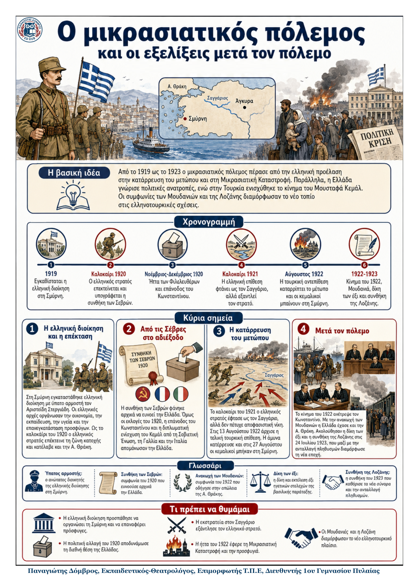

Δεν βρέθηκε η λέξη ή η φράση μέσα στην ενότητα.
1Η βασική ιδέα
Η ελληνική παρουσία στη Μικρά Ασία εξελίχθηκε από ζώνη κατοχής σε εκτεταμένο πόλεμο. Οι πολιτικές αλλαγές στην Ελλάδα, η μεταβολή της στάσης των συμμάχων και η ενίσχυση του Κεμάλ αποδυνάμωσαν την ελληνική θέση. Η ήττα του 1922 έφερε την καταστροφή της Σμύρνης, την προσφυγιά και βαθιές αλλαγές σε Ελλάδα και Τουρκία.
2Ιστορικό πλαίσιο
Η ελληνική διοίκηση στη Σμύρνη, με ύπατο αρμοστή τον Αριστείδη Στεργιάδη, προσπάθησε να διοικήσει ισότιμα όλους τους κατοίκους.
Το 1920 ο ελληνικός στρατός επέκτεινε τη ζώνη κατοχής, ενώ η συνθήκη των Σεβρών απορρίφθηκε από τον Κεμάλ.
Οι εκλογές του Νοεμβρίου 1920 έφεραν τους φιλοβασιλικούς στην εξουσία και τον Κωνσταντίνο πίσω στην Ελλάδα.
3Χρονογραμμή: από την επέκταση στην κατάρρευση
| Καλοκαίρι 1920 | Η Ελλάδα επεκτείνει τη ζώνη κατοχής. Υπογράφεται η συνθήκη των Σεβρών, την οποία απορρίπτει ο Κεμάλ. |
|---|---|
| Νοέμβριος - Δεκέμβριος 1920 | Οι Φιλελεύθεροι ηττώνται στις εκλογές. Ο Κωνσταντίνος επιστρέφει και η εκστρατεία συνεχίζεται. |
| Καλοκαίρι 1921 | Ο ελληνικός στρατός φτάνει ως τον Σαγγάριο, αλλά υποχωρεί ύστερα από μεγάλες απώλειες. |
| 13-27 Αυγούστου 1922 | Η τελική τουρκική επίθεση διαλύει το ελληνικό μέτωπο. Οι κεμαλικοί μπαίνουν στη Σμύρνη. |
| Σεπτέμβριος 1922 | Η καταστροφή και η προσφυγιά σημαίνουν το τέλος της μακραίωνης ελληνικής παρουσίας στη Μικρά Ασία. |
4Μετά την ήττα: Ελλάδα και Τουρκία
Τα κύρια σημεία
1. Το κίνημα του 1922 Μονάδες από Χίο και Μυτιλήνη, με ηγέτες τον Πλαστήρα και τον Γονατά, ανάγκασαν τον Κωνσταντίνο να φύγει και σχημάτισαν επαναστατική κυβέρνηση. |
2. Μουδανιά και «δίκη των έξι» Η ανακωχή των Μουδανιών έδωσε την Ανατολική Θράκη στην Τουρκία. Έξι κορυφαία φιλοβασιλικά στελέχη εκτελέστηκαν ως υπεύθυνα για την ήττα. |
|---|---|
3. Η συνθήκη της Λοζάνης Στις 24 Ιουλίου 1923 αναγνωρίστηκε η τουρκική κυριαρχία στη Μικρά Ασία και στην Ανατολική Θράκη και ρυθμίστηκε η ανταλλαγή πληθυσμών. |
4. Η αποκατάσταση των προσφύγων Η Ελλάδα αντιμετώπισε μεγάλη οικονομική και κοινωνική κρίση. Διανεμήθηκαν γαίες σε πρόσφυγες και γηγενείς ακτήμονες. |
5Σύντομη σύγκριση των εξελίξεων
| Τομέας | Ελλάδα | Τουρκία |
|---|---|---|
| Πολίτευμα | Κίνημα, αποχώρηση Κωνσταντίνου, πολιτική αναταραχή. | Ο Κεμάλ γίνεται πρόεδρος της Τουρκικής Δημοκρατίας. |
| Εδαφικές ρυθμίσεις | Απώλεια Ανατολικής Θράκης, Ίμβρου και Τενέδου. | Κυριαρχία στη Μικρά Ασία και στην Ανατολική Θράκη. |
| Κοινωνία | Προσφυγική αποκατάσταση και διανομή γαιών. | Κοσμικό κράτος και μεταρρυθμίσεις δυτικού τύπου. |
6Ορισμοί - γλωσσάρι
| Ανακωχή: συμφωνία προσωρινής διακοπής των πολεμικών επιχειρήσεων. | Ανταλλαγή πληθυσμών: υποχρεωτική μετακίνηση πληθυσμών με βάση τη θρησκεία. |
|---|---|
| Απαλλοτρίωση: αφαίρεση ιδιωτικής γης από το κράτος με σκοπό τη διανομή της. | Κοσμικό κράτος: κράτος όπου η πολιτική εξουσία δεν στηρίζεται στη θρησκεία. |
7Τι πρέπει να θυμάμαι
Η πορεία προς τον Σαγγάριο εξάντλησε τον ελληνικό στρατό χωρίς να φέρει νίκη.
Η αλλαγή της διεθνούς στάσης ενίσχυσε τον Κεμάλ και απομόνωσε την Ελλάδα.
Η κατάρρευση του Αυγούστου 1922 έφερε την καταστροφή της Σμύρνης και την προσφυγιά.
Η Λοζάνη καθόρισε τα νέα σύνορα και την ανταλλαγή πληθυσμών.
